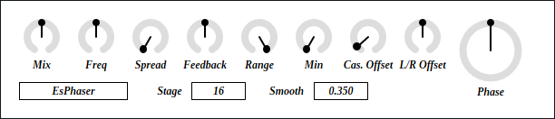
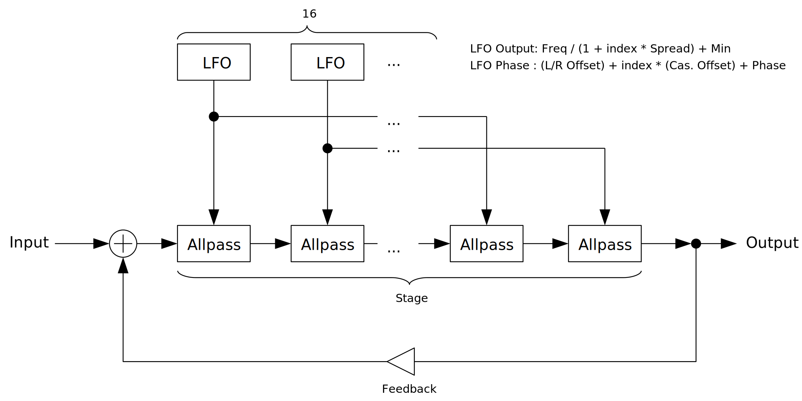

full - VST 3 (github.com) macOS - VST 3 (github.com) Update: 2023-03-03

EsPhaser is a phaser with up to 4096 stages of order 2 Thiran all-pass filters. This is the same phaser used in EnvelopedSine.
full - VST 3 (github.com) macOS - VST 3 (github.com) EsPhaser requires AVX or later SIMD instructions on x86_64 environment.
full package contains following builds.
Linux build is built on Ubuntu 20.04. If you are using distribution other than Ubuntu 20.04, plugin will not likely to run. In this case, please take a look at build instruction.
macOS package is recommended for macOS user. I can’t
purchase Apple Developer Program, therefore installation requires a
workaround to bypass Gatekeeper. Details of workaround are written in
Installation -> macOS Specific
section.
Feel free to contact me on GitHub
repository or ryukau@gmail.com.
You can fund the development through paypal.me/ryukau. Current goal is to purchase M1 mac for better macOS support. 💸💻
Place *.vst3 directory to:
/Program Files/Common Files/VST3/ for Windows.$HOME/.vst3/ for Linux./Users/$USERNAME/Library/Audio/Plug-ins/VST3/ for
macOS.DAW may provides additional VST3 directory. For more information, please refer to the manual of the DAW.
Extract preset zip, then place preset directory to the OS specific path:
/Users/$USERNAME/Documents/VST3 Presets/Uhhyou$HOME/.vst3/presets/Uhhyou/Users/$USERNAME/Library/Audio/Presets/UhhyouPreset directory name must be the same as the plugin. Make
Uhhyou directory if it does not exist.
If DAW doesn’t recognize the plugin, try installing C++
redistributable (vc_redist.x64.exe). Installer can be found
in the link below.
On Ubuntu 18.0.4, those packages are required.
sudo apt install libxcb-cursor0 libxkbcommon-x11-0If DAW doesn’t recognize the plugin, take a look at
Package Requirements section of the link below and make
sure all the VST3 related package is installed.
REAPER on Linux may not recognize the plugin. A workaround is to
delete a file ~/.config/REAPER/reaper-vstplugins64.ini and
restart REAPER.
Important: full package is not
confirmed working. When using full, try removing following
files.
Contents/Resources/DocumentationContents/x86_64-linuxContents/x86_64-winmacOS package doesn’t contain above files. Also, all
packages are in “ad-hoc signing” state set by codesign
command.
When trying to run plugin first time, following message may appear on macOS.
<PluginName>.vst3 is damaged and can't be opened. You should move it to the Trash.In this case, open terminal and try running one or both of following
command to unzipped .vst3 directory. Replace
/path/to/PluginName.vst3 according to your install
location.
xattr -rd com.apple.quarantine /path/to/PluginName.vst3
xattr -rc /path/to/PluginName.vst3Plugin may be considered as unsigned/un-notarized application. In this case, open System Preferences, go to Security & Privacy → General, then click the Open Anyway button. The offcial Apple help page linked below has screenshots for the procedure. See “If you want to open an app that hasn’t been notarized or is from an unidentified developer” section.
If the plugin is still not working, try changing install location to
/Library/Audio/Plug-ins/VST3/ or
/Users/$USERNAME/Library/Audio/Plug-ins/VST3/ whichever
still haven’t tried.
If all the above methods do not work, try following the steps below.
sudo spctl --master-disable.Beware that steps above degrades security of your system. To revert the settings, follow the steps below.
sudo spctl --master-enable.codesignNote This section may not relevant to
macOS packages. However it’s not verified. (GitHub
issue)
To use full package, following command might be
used.
sudo codesign --force --deep -s - /path/to/PluginName.vst3codesign might not be available without installing Xcode.
At first time, create color config file to:
/Users/USERNAME/AppData/Roaming/UhhyouPlugins/style/style.json
on Windows.$XDG_CONFIG_HOME/UhhyouPlugins/style/style.json on
Linux.
$XDG_CONFIG_HOME is empty, make
$HOME/.config/UhhyouPlugins/style/style.json./Users/$USERNAME/Library/Preferences/UhhyouPlugins/style/style.json
on macOS.style.json will be loaded for each time a plugin window
opens.
Several color themes are available on the link below.
Below is a example of style.json.
{
"fontFamily": "Tinos",
"fontBold": true,
"fontItalic": true,
"foreground": "#000000",
"foregroundButtonOn": "#000000",
"foregroundInactive": "#8a8a8a",
"background": "#ffffff",
"boxBackground": "#ffffff",
"border": "#000000",
"borderCheckbox": "#000000",
"borderLabel": "#000000",
"unfocused": "#dddddd",
"highlightMain": "#0ba4f1",
"highlightAccent": "#13c136",
"highlightButton": "#fcc04f",
"highlightWarning": "#fc8080",
"overlay": "#00000088",
"overlayHighlight": "#00ff0033"
}Following is a list of font options.
fontFamily: Font family name.fontBold: Enable bold style when
true, disable when false.fontItalic: Enable italic style when
true, disable when false.To use custom font, place *.ttf file into custom font
path: *.vst3/Contents/Resources/Fonts.
Notice: If the combination of
fontFamily, fontBold, fontItalic
is not exists in custom font path, default font of VSTGUI is used.
If fontFamily is set to empty string "",
then "Tinos"
is used as fallback. If the length is greater than 1 and the font family
name doesn’t exists, default font of VSTGUI is used.
Styles other than bold, italic or bold-italic are not supported by VSTGUI. For example, “Thin”, “Light”, “Medium”, and “Black” weights cannot be used.
Hex color codes are used.
First letter # is conventional. Plugins ignore the first
letter of color code, thus ?102938, \n11335577
are valid.
Do not use characters outside of 0-9a-f for color
value.
Following is a list of color options. If an option is missing, default color will be used.
foreground: Text color.foregroundButtonOn: Text color of active toggle button.
Recommend to use the same value of foreground or
boxBackground.foregroundInactive: Text color of inactive components.
Currently, only used for TabView.background: Background color.boxBackground: Background color of inside of box shaped
components (Barbox, Button, Checkbox, OptionMenu, TextKnob,
VSlider).border: Border color of box shaped components.borderCheckbox: Border color of CheckBox.borderLabel: Line color of parameter section
label.unfocused: Color to fill unfocused components.
Currently, only used for knobs.highlightMain: Color to indicate focus is on a
component. Highlight colors are also used for value of slider components
(BarBox and VSlider).highlightAccent: Same as highlightMain.
Used for cosmetics.highlightButton: Color to indicate focus is on a
button.highlightWarning: Same as highlightMain,
but only used for parameters which requires extra caution.overlay: Overlay color. Used to overlay texts and
indicators.overlayHighlight: Overlay color to highlight current
focus.Right Click on the controls pops up a context menu provided by DAW.
Knob and slider provides following controls:
dB) parameters,
floor is applied after the value is converted to amplitude.When stage is set to 4096, it will be CPU intensive.
Output varies in different sample rate.
Output may be loud when changing Cas. Offset. Use Shift + Left Drag to slowly change the value, or insert limiter to prevent hard clipping.
If the image is small, use Ctrl + Mouse Wheel or “View Image” on right click menu to scale.
Diagram only shows overview. It’s not exact implementation.

Number of all-pass filter.
Mixing ratio of dry/wet signal of phaser. Dry : Wet
becomes 0 : 1 when turned the knob to rightmost.
LFO frequency.
Spread frequency between LFOs.
Equation for difference of LFO phase in 1 sample:
deltaPhase = 2 * pi * Freq / ((1 + LfoIndex * Spread) * sampleRate)Amount of feedback. Feedback is disabled when the knob is pointing to 12 o’clock. It becomes negative feedback when turned to left and positive feedback when turned to right.
Range of all-pass filter modulation by LFO.
Minimum value of all-pass filter modulation by LFO.
Phase offset between 16 LFO.
LFO phase offset between L/R channels.
LFO phase. This can be used to make sound with automation. Turning
Freq to leftmost sets LFO frequency to 0.
Equation for phase offset:
LfoPhaseOffset = Phase + (L/R Offset) + LfoIndex * (Cas. Offset)processContext is
nullptr.virtual to destructor of common components.
This may prevent some cause of crash or memory leak.style.json.bypass parameter behavior. This fixes playing all
the notes at the moment of unmute, even if host sends note to plugin
while muting. This bug was only happening on the hosts which respect VST
3 bypass parameter.EsPhaser is licensed under GPLv3. Complete licenses are linked below.
If the link above doesn’t work, please send email to
ryukau@gmail.com.
VST is a trademark of Steinberg Media Technologies GmbH, registered in Europe and other countries.